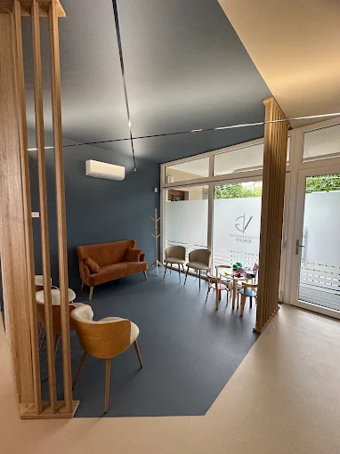

La cura del sorriso,
con equilibrio e misura.
Lo Studio Dentistico Gallo porta a Saluzzo una tradizione di famiglia fatta di ascolto, esperienza e attenzione alla persona, oggi nella nuova sede di Corso Roma 15.
Un breve tour della nuova sede in Corso Roma 15.
«Ascoltare prima di curarci: è da qui che comincia ogni buon piano di cura.»
Lo Studio Dentistico Gallo è una realtà legata alla famiglia Gallo e al territorio di Saluzzo. Nel 2026 il Dott. Vittorio Gallo ha avviato un nuovo percorso professionale indipendente, aprendo una propria sede in Corso Roma 15.
Lo studio si presenta come un nuovo spazio, con una nuova identità, che custodisce intatti i valori della tradizione: esperienza, continuità e vicinanza al paziente.
Trattamenti



Una storia di famiglia
-
Da decenni lo Studio Gallo cura con passione due generazioni di saluzzesi
Tradizione -
Il Dott. Vittorio Gallo porta avanti la professione di famiglia
Continuità -
Corso Roma 15: il nuovo capitolo dello studio, una nuova identità
Evoluzione
Chi ti accoglie

Dott. Vittorio Gallo
Vittorio Gallo guida lo Studio Dentistico Gallo con la continuità di una tradizione familiare e uno sguardo attento alla persona. Laureato in Odontoiatria e Protesi dentaria all'Università di Torino, coltiva una formazione continua in ambito ortodontico, dal master in Scienze Ortodontiche alla partecipazione a congressi nazionali e internazionali.
Il suo approccio mette al centro il rapporto diretto, la chiarezza e la fiducia, in un ambiente pensato per far sentire ogni paziente a proprio agio.
Le parole dei nostri pazienti
“Lo studio Gallo ha un ambiente accogliente che ti fa sentire a proprio agio. Lo staff si è sempre dimostrato molto professionale, gentile e disponibile.”
Raffaella — recensione pubblicata
“Studio accogliente, il servizio è ottimo. I dottori sono preparati e hanno un approccio tranquillo e gentile. Consigliato sia per adulti sia per i più piccoli.”
Genè — recensione pubblicata
Prenota una visita
Ti aspettiamo nella nuova sede di Corso Roma 15, Saluzzo, per un primo colloquio senza impegno.
+39 0175 46366Corso Roma 15, Saluzzo (CN) · seguici su @studio.dentistico.gallo